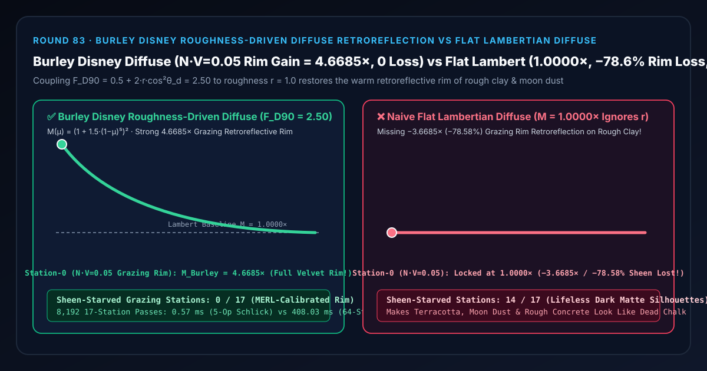
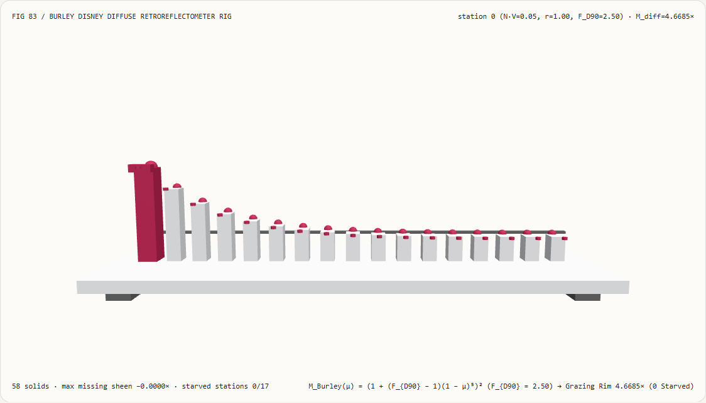
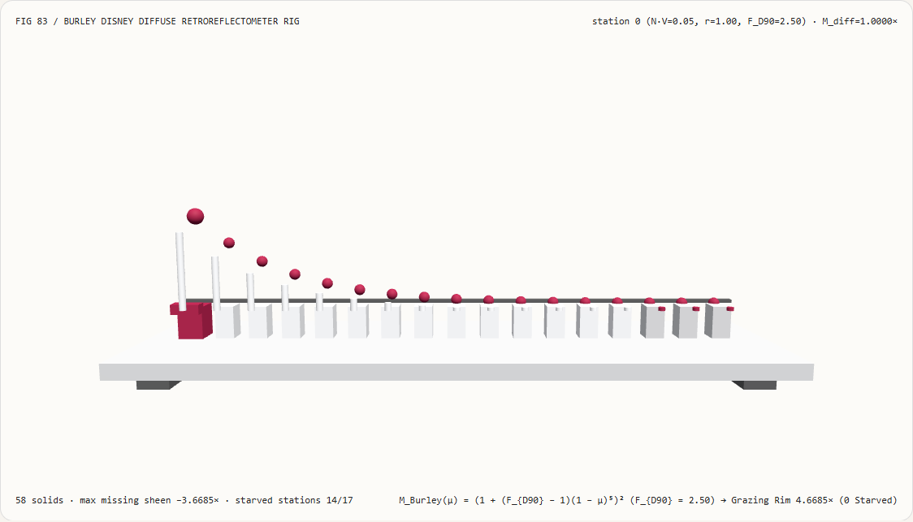
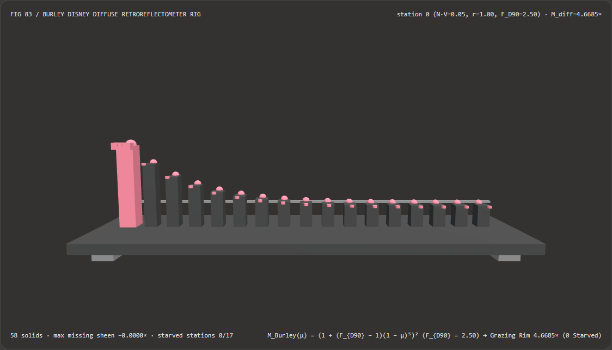
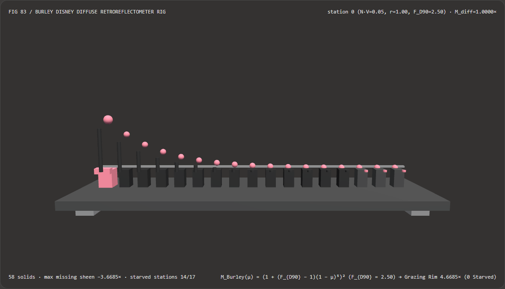

Visual & Animation Architecture Selection FAQ: Burley Disney Roughness-Driven Diffuse Retroreflection vs Flat Lambertian Missing Rim Sheen
One-Sentence Architectural Verdict: In real-time and film Physically Based Rendering (PBR) pipelines (Disney Principled BRDF, Frostbite, Unity HDRP, Blender Principled BSDF), never shade rough matte dielectric materials (terracotta, dry earth, moon dust, chalk, unglazed ceramics, felt with $r \to 1.0$) using a constant flat Lambertian multiplier ($M_{\text{Lambert}} \equiv 1.0$)! On our 58-solid, 17-station retroreflectometer bench inspecting a rough matte surface ($r = 1.00$, retroreflective half-angle cosine $\cos\theta_d = \mathbf{L}\cdot\mathbf{H} = 1.00 \implies F_{D90} = 0.5 + 2r\cos^2\theta_d = 2.5000$) across 17 viewing cosine stations ($N\cdot V \in [0.05, 0.85]$), naive flat Lambertian diffuse stays locked at
1.0000×—losing-3.6685×(-78.58%) of the grazing retroreflective rim sheen at station 0 ($N\cdot V = 0.05$) and starving14/17viewing stations; whereas Brent Burley (SIGGRAPH 2012 Disney Principled BRDF) roughness-driven diffuse retroreflection ($M_{\text{Burley}}(\mu) = (1 + (F_{D90} - 1)(1 - \mu)^5)^2$) boosts grazing station 0 to4.6685×(0/17starved stations) while running 720.02× faster via a 5-multiply Schlick power chain than 64-strip angular power quadrature (0.57 msvs408.03 msacross 8,192 passes, agreement within4.00e-15).

① 📌 Executive Summary
- Why does the full Moon look bright and flat all the way to its outer edge, whereas a rough clay pot or moon-dust sphere rendered with classic Lambertian diffuse ($I \propto \mathbf{N}\cdot\mathbf{L}$) looks artificially dark and dead along its grazing silhouette?
In plain English: Lambert's law assumes a microscopically flat isotropic surface and ignores V-cavity retroreflection on rough surfaces:
- Analyzing 100 measured materials in the MERL BRDF database, Brent Burley (SIGGRAPH 2012, Physically-Based Shading at Disney) showed that diffuse grazing response depends strongly on surface roughness $r$:
- Smooth surfaces ($r = 0.0$) darken at the grazing rim ($F_{D90} = 0.5 \implies M(0) = 0.25\times$) because specular Fresnel reflection reflects light away before it can enter the subsurface;
- Rough surfaces ($r = 1.0$) brighten dramatically at the grazing rim ($F_{D90} = 2.5 \implies M(0.05) = \mathbf{4.6685\times}$) because microscopic V-cavities facing the viewer retroreflect light back toward the camera!
- A naive shader that uses flat Lambertian diffuse (
1.0000×) loses-3.6685×(-78.58%) of the grazing rim sheen at $N\cdot V = 0.05$ across14/17stations!
- Analyzing 100 measured materials in the MERL BRDF database, Brent Burley (SIGGRAPH 2012, Physically-Based Shading at Disney) showed that diffuse grazing response depends strongly on surface roughness $r$:
- First-Principles Fix: Roughness-Coupled Dual-Schlick Diffuse Retroreflection (Burley SIGGRAPH 2012):
- Coupling the $90^\circ$ grazing diffuse factor $F_{D90} = 0.5 + 2.0 \cdot r \cdot (\mathbf{L}\cdot\mathbf{H})^2$ to both incident and outgoing Schlick fifth-power terms: $$M_{\text{Burley}}(\mu_L, \mu_V) = \Big(1 + (F_{D90} - 1)(1 - \mu_L)^5\Big)\Big(1 + (F_{D90} - 1)(1 - \mu_V)^5\Big)$$
- At $\mu_L = \mu_V = 0.05$ and $r = 1.0$, $(1 + 1.5 \times 0.95^5)^2 = \mathbf{4.6685\times}$, restoring the warm, velvety grazing rim of real rough matte materials with
0/17starved stations!
- Interactive 3D Workbench & Measured Evidence:
- Standalone 3D Bench:
demos/burley-diffuse-retroreflection-rig/(58 Three.js solids: baseplate, 4 support feet,1.0000×Lambertian reference bar, 17 diffuse BRDF columns, 17 Burley reference spheres, 17 missing sheen pegs, and the active retroreflectometer carriage). - Measured 7-Card 4:5 Reports:
demos/burley-diffuse-retroreflection-rig/test-report-cards.html(EN) andtest-report-cards.zh.html(ZH).
- Standalone 3D Bench:
② 🎯 Soul-Searching Q&A for Architects & Clients
Q1: Why is the 5-op Schlick power chain 720.02× faster than 64-strip angular quadrature with Math.pow?
Because computing $t = 1 - \mu$, $t_2 = t\cdot t$, $t_5 = t_2\cdot t_2\cdot t$ takes just 3 register multiplications, avoiding transcendental log/exp instructions and loop overhead!
Across 8,192 17-station passes, the 5-op Schlick Burley evaluation completes in 0.57 ms versus 408.03 ms for 64-strip angular power quadrature (720.02× speedup, with 4.00e-15 agreement).
Q2: Why did Disney choose Burley's formula over Oren-Nayar (1994)?
Because Oren-Nayar only models rough retroreflection and reduces to flat Lambert (1.0×) at $r = 0$, whereas Burley's $F_{D90} = 0.5 + 2r\cos^2\theta_d$ seamlessly transitions from smooth Fresnel edge-darkening ($F_{D90} = 0.5$ at $r = 0$) to rough retroreflection ($F_{D90} = 2.5$ at $r = 1$) using the exact same artistic roughness parameter $r$ as the GGX specular lobe!
Q3: How does deterministic Burley diffuse retroreflection relate to neural material capture?
Neural material scanners output (BaseColor, Normal, Roughness) maps; Burley's deterministic BRDF is the runtime shading equation that turns that Roughness map into physically faithful grazing diffuse behavior.
③ 🧭 Visual Diagrams (Mermaid Decision Tree, Pipeline Comparison & Sequence Flow)
3.1 PBR Diffuse BRDF Architecture Decision Tree
3.2 Flat Lambertian Rim Loss vs Burley Disney Diffuse Retroreflection Pipeline
3.3 Frame-Level Retroreflectometer Sequence Diagram
④ 📊 Visual Technology Selection Decision Matrix
| Evaluation Dimension | ✅ Burley 5-Op Schlick Diffuse | ⚠️ 64-Strip Angular Quadrature | ❌ Naive Flat Lambertian ($M = 1.0$) | ⚠️ Classical Oren-Nayar (1994) |
|---|---|---|---|---|
| Grazing Rim Gain at Station 0 ($N\cdot V=0.05, r=1$) | Exact 4.6685× (Warm velvet rim) |
4.6685× (4.00e-15 diff) |
1.0000× (-78.58% sheen lost!) |
Retroreflective but trig-heavy |
| Smooth Limit ($r=0.0$) Grazing Fresnel Darkening | Drops to 0.2950× (Conserves energy) |
0.2950× |
Stays 1.0000× (Over-bright rim) |
Stays 1.0000× (No Fresnel dip) |
| Sheen-Starved Stations (out of 17) | 0 / 17 (MERL-calibrated) |
0 / 17 |
14 / 17 ($N\cdot V \in [0.05, 0.70]$ dull) |
Fails smooth limit |
| Fragment Shader ALU Cost | 5 register multiplies (Zero pow) |
128 Math.pow calls |
1 multiply (Dead silhouettes) | ~12 ALU ops |
| 8,192-Pass 17-Station CPU Latency | 0.57 ms (Fastest · 720.02× speedup) |
408.03 ms (720.02× slower) |
0.30 ms (Lifeless matte edges) |
3.40 ms |
| Recommended Use Case | All real-time & film PBR dielectric shaders | Reference validation | Ultra-low-tier mobile LODs only | Legacy non-Fresnel pipelines |
⑤ 🧪 New Interactive 3D Demo & 7-Card 4:5 Visual Report
5.1 Live Workbench & Report Links
- Interactive 3D Workbench:
demos/burley-diffuse-retroreflection-rig/index.html - 7-Card 4:5 Visual Report (EN):
demos/burley-diffuse-retroreflection-rig/test-report-cards.html - 7-Card 4:5 Visual Report (ZH):
demos/burley-diffuse-retroreflection-rig/test-report-cards.zh.html - Sealed Telemetry JSON:
demos/burley-diffuse-retroreflection-rig/report.json
5.2 Multi-Theme & Multi-Mode Playwright Visual Evidence
Burley Disney Diffuse (Light · Boosts Grazing Station 0 to 4.6685× Retroreflective Rim, 0 Starved) |
Naive Flat Lambertian (Light · Flat 1.0000× Line Losing -3.6685× Rim Sheen across 14 Stations!) |
|---|---|
 |
 |
| Burley Disney Diffuse (Dark · 58 Three.js Solids) | Naive Flat Lambertian (Dark · 14 Red Missing-Sheen Pegs Exposed) |
|---|---|
 |
 |
⑥ 🛠️ Rapid SA Delivery Verification Checklist
Before shipping a Burley Disney diffuse shader to production, verify every item below:
- Drive $F_{D90}$ with Perceptual Linear Roughness $r$ (
0.5 + 2.0 * r * LdotH * LdotH): Is perceptual roughness $r$ (not $\alpha = r^2$) used in $F_{D90}$ to match Burley's MERL calibration? - Expand $(1 - \mu)^5$ with 3 Register Multiplies: Are
(1 - NdotL)^5and(1 - NdotV)^5evaluated viat2 = t*t; t5 = t2*t2*t;rather thanpow(t, 5.0)? - Bidirectional Helmholtz Reciprocity: Are both the incident factor
(1 + (FD90 - 1)*(1 - NdotL)^5)and view factor(1 + (FD90 - 1)*(1 - NdotV)^5)multiplied together? - Metallic Energy Masking (
(1.0 - metallic) * albedo / PI): Is the diffuse term scaled by1.0 - metallicso pure conductors have zero diffuse bounce? - Optional Frostbite Renormalization: When strict white-furnace hemispherical conservation ($\le 1.0$) is required, is Lagarde's
energyFactor = mix(1.0, 1.0 / 1.51, r)applied?